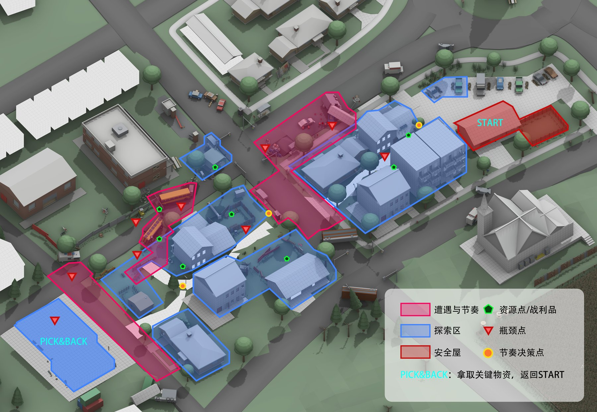
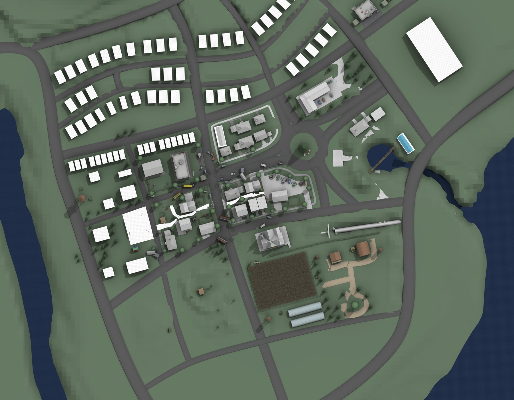

主街直行
路程直观 · 暴露最高 · 耗时最短
沿主街往返。这条路几乎不需要「找」，承担方向教学的职能—— 在认知负担最低的情况下把街区的方向和尺度讲清楚。 设想瓶颈点收窄通行宽度，脚步与视线被引向预设方向。
$ 开放世界 · 生存 · 探索 · 白盒关卡
该项目主要展示第一节任务的探索。
任务目标 · Objective
Haven House 的备用发电机已经停止工作。玩家必须前往 Miller's Fuel 搜寻燃油， 避开住宅区的感染者，并把燃油带回安全屋。
当发电机重新启动，屋内一盏昏暗的灯亮起。远处通往军事基地的断桥依然沉在黑暗里—— 它提醒玩家，恢复一栋房子的供电，只是第一步。
以丧尸灾变后的现代小镇为背景，尝试通过住宅区、资源兴趣点与安全屋之间的空间关系， 组织一段具有探索目标与风险选择的生存关卡体验。
项目仍在制作中。具体玩法机制与测试结论将在实现和验证后补充。
组织住宅区、加油站等核心空间与道路连接关系。
围绕安全屋至加油站的资源搜集任务，设计探索路径。
探索如何结合兴趣点危险程度、资源价值与撤离路线形成决策。
通过 Unity 场景搭建检查空间尺度、路径可读性与实际行走体验。
小镇关卡的总览俯视：图中标注了住宅巷、学校、教堂、加油站等兴趣点， 以及主线的行进路线与瓶颈、资源分布。点下面的标记，查看每个位置的设计说明。
这张分析图把任务拆成两层：往哪里走（探索），以及在哪停下来做决定（节奏）。

Unity 白盒阶段的俯视全景：住宅组团、镇中心、环路、农田与水体一起构成小镇的骨架。

把边界说清楚：哪些已经在 Unity 白盒里落地，哪些还停留在设计设想—— 后者会在实现与测试后补充结论。
围绕「安全屋 → 加油站 → 安全屋」的往返结构，我在布局上预留了三种走法的空间基础， 属于设计设想，实际选择率有待实现后测试验证：
路程直观 · 暴露最高 · 耗时最短
沿主街往返。这条路几乎不需要「找」，承担方向教学的职能—— 在认知负担最低的情况下把街区的方向和尺度讲清楚。 设想瓶颈点收窄通行宽度，脚步与视线被引向预设方向。
视野受限 · 暴露最低 · 撤退空间小
贴着住宅组团外侧绕行。设想给「已经熟悉地形的玩家」一条更聪明的走法， 代价是几乎没有容错：被发现时退路有限。设计上预留了半掩体喘息点的位置。
资源收益最高 · 耗时最长 · 遭遇最多
穿过住宅巷逐栋搜索。设想给愿意多花时间的玩家对应的高价值资源， 真实瓶颈不是路线而是消耗品——「继续搜还是见好就收」是这条路的核心取舍。
下表是各兴趣点的资源与威胁规划，属于设计意图—— 让每一次弯腰捡拾都对应一次真实的取舍，具体数值待实现后验证调整。
| POI | 资源投放 | 威胁设想 | 玩家要做的取舍 |
|---|---|---|---|
| 起点 · 安全屋 | 基础物资、主线目标（发电机） | 无 | 出门前带多少消耗品 |
| 住宅巷（两片） | 医疗、工具、弹药（价值最高） | 感染者密度最高 | 深入几栋：多搜的收益 vs 回程的弹药与体力 |
| 学校 | 中等资源、大空间搜索 | 中等 | 大房间搜得快但暴露久 |
| 教堂 | 补给 | 较低 | 绕行顺路补给 vs 直线赶路 |
| 加油站（任务目标） | 主线燃油、补给 | 前场开阔、室内掩体 | 先清场还是拿了就跑 |
实现感染者行为与巡逻逻辑，用实际试走验证威胁梯度与多路线取舍，补充测试结论与演示视频。